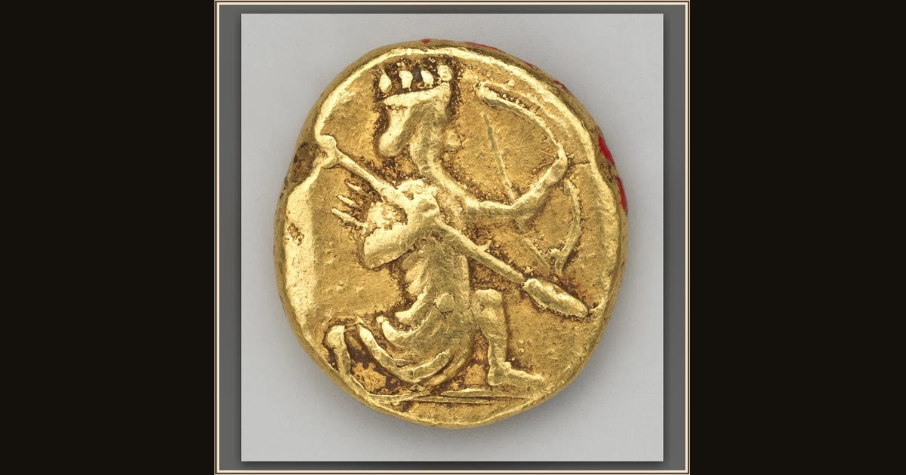

Daric with king
Achaemenid · ca. 4th century BCE · met
The Persian gold coin shows a crowned king kneeling with bow and spear; the chorus mourns Darius as the ruler of archers, beloved by the men of Susa (556). Explore its place in Aeschylus's Plays, Persians, line 555.